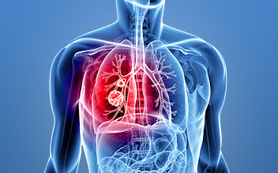

Lung cancer is a disease in which an abnormal, uncontrolled growth of cells occurs in the tissue of the lungs. The lungs are the breathing organs located in the chest. The lungs bring in fresh oxygen, which is distributed throughout the body by the blood. The lungs also remove carbon dioxide, a waste product, from the blood. The lungs are spongy organs that are surrounded by a thin, protective membrane called the pleura. Each lung is divided into lobes; the right lung has three lobes, and the left lung has two lobes. Within the lungs are flexible airways called bronchi, which branch out into many smaller airways called bronchioles. The bronchioles lead to small, grape-like clusters of air sacs called alveoli. Oxygen and carbon dioxide pass to and from the alveoli into capillaries, the smallest of the vessels that carry blood throughout the body. Lung cancer develops when a cell in the lung becomes abnormal and begins to duplicate uncontrollably. These abnormal cells eventually form a mass, or tumor, and can spread to other parts of the body if not treated. This spreading of cancer cells is called metastasis. There are two major types of lung cancer: small cell lung cancer and non-small cell lung cancer. The cancer cells of each type grow and spread in different ways, and they are treated differently.
A) Non-small cell lung cancer
Non-small cell lung cancer is the most common form of lung cancer, accounting for about 85% of all lung cancers. As you might expect, the cells of non-small lung cancer are larger than those of small cell lung cancer. There are several different types of non-small cell lung cancers, based on the type of cells found in the cancer. The most common types of non-small cell lung cancer include:
- Squamous cell carcinoma (also called epidermoid carcinoma) begins in the special cells, called epithelial cells, which line the air passages. Thus it may occur within the larger breathing tubes. If not treated, this cancer may spread to the lymph nodes, bones, adrenal gland, liver, and brain. It is a common cancer, making up approximately 25% of all lung cancers in the United States. The most common cause of squamous cell carcinoma is smoking.
- Adenocarcinoma usually begins in the mucus-producing cells of the lungs. It is the most common type of lung cancer in the United States. While it has been linked to smoking, adenocarcinoma is the most common type of lung cancer in non-smokers. In most cases, adenocarcinoma develops slowly. In other cases, the cancer develops more quickly and can be rapidly fatal. When it spreads, it often spreads to the brain. Other common sites for metastasis include the other lung, lymph nodes, the liver, the adrenal glands and bone.
- Large cell carcinoma is responsible for about 10% to 20% of lung cancers. Large cell carcinomas include all lung cancers that cannot be classified as squamous cell carcinomas or adenocarcinomas.
- Non-small cell cancer usually is treated by surgery, taking out the cancer in an operation, if it is diagnosed at an early stage, before it has spread to any other area in the body. Chemotherapy and radiation therapy are other treatment options. These are used when the cancer has spread to areas of the body beyond the primary tumor, or when the person with lung cancer is not healthy enough to tolerate surgery. At times they are used with the intention of curing the cancer. When the cancer has spread too far to cure, they can be very effective at improving the quality of life and extending survival.
B) Small cell lung cancer
Small cell lung cancer accounts for about 15% of all lung cancers. As the name implies, small cell lung cancer involves cancer cells that are smaller in size than most other cancer cells. Although the cells are small, they are able to quickly reproduce and form large tumors, as well as to spread to other parts of the body. There are two stages of small cell lung cancer:
- Limited refers to cancer that is confined to the chest.
- Extensive refers to lung cancer that has spread to other areas beyond the chest.
- The rapidly dividing small cell lung cancers do respond to chemotherapy (drug therapy that attacks growing, dividing cells) but are difficult to cure. In general, limited small cell lung cancer is treated with chemotherapy and radiation therapy. Extensive small cell lung cancer most often is treated solely with chemotherapy.
What are the symptoms of lung cancer?
Lung cancer often produces no symptoms until the disease is well established and/or has spread to other parts of the body. When symptoms do appear, they may include:
- requent bouts of bronchitis (inflammation and swelling of the bronchi) or pneumonia (an infection that occurs when fluid collects in the lungs)
- Coughing, especially coughing up blood
- Wheezing
- Weight loss or loss of appetite
- Hoarseness
- Swelling of the face or arms
- Fever
- Shortness of breath
- Pain in the shoulders, chest or back
What causes lung cancer ?
Smoking (cigarettes, pipes or cigars) is the cause of 85% of all cases of lung cancer. Cigarette smoke contains more than 4,000 chemicals, many of which are proven to cause cancer. Research suggests that the chemicals formed when tobacco is burned, inhaled and absorbed by the lungs trigger a change in the cells, which leads to cancer. Tobacco smoke also contains harmful gases, such as nitrogen oxide and carbon monoxide. Other risk factors for lung cancer also have been identified. Risk factors for lung cancer include:
- Exposure to radon — Radon is an odorless, colorless gas that is produced naturally from the breakdown of uranium. Radon often is present in soil and water, and can get into the air we breathe. High levels of radon can occur in certain work environments and in homes, where it can seep in undetected.
- Exposure to chemicals — Workers exposed to certain chemicals have a higher risk for lung cancer. These chemicals include asbestos, nickel, mustard gas, and silica.
- Family history — Having a family history of the disease also may increase the risk of developing lung cancer.
- History of lung disease — People with other lung diseases, such as COPD or pulmonary fibrosis, are at an increased risk of developing lung cancer.
- Second hand smoke — Exposure to smoke from others' cigarettes can increase the risk of developing lung cancer.
- Diet — Diets low in fruits, vegetables and grains may increase the risk of lung cancer.
- Marijuana use — Studies have shown that long-term smoking of marijuana can cause cancer of the airways (bronchial tubes) leading to the lungs.
How common is lung cancer ?
- According to the American Cancer Society, more than 200,000 Americans are diagnosed with lung cancer each year. It is the number one cause of cancer death for both men and women in the United States. Overall, Americans have about a 7% chance of developing lung cancer during their lifetimes.
- Lung cancer usually occurs in people over 50 years old who have a long history of cigarette smoking. Overall, lung cancer is more common in men than in women, although adenocarcinoma—a form of non-small cell lung cancer—is more common in women. Lung cancer also affects African Americans more often than Caucasians.
How is lung cancer diagnosed ?
Because early lung cancer often has no symptoms, it is difficult to diagnose the disease in its early stages. Some diagnostic tests that may be used include:
- Sputum test — Your phlegm, or spit, is studied to see if cancer cells from the lungs are present.
- Chest X-ray — X-rays use low doses of radiation to create images of the body.
- Computed tomography (CT or CAT) scan — This is a special X-ray that uses a computer to create a series of images, or slices, of the inside of the body.
- Magnetic resonance imaging (MRI) scan — This is a test that produces images of the inside of the body using a large magnet, radio waves and a computer.
- Positron emission tomography (PET) scan — This is a technique to obtain three-dimensional, color images using short-lived radioactive substances. Unlike X-rays and CT scans, which provide images of the structures in the body, PET scans help the doctor evaluate body function. The PET scan can detect cancerous tumors because of their ability to absorb the radioactive material.
- Bronchoscopy — During this test, the doctor looks into the bronchi through a special instrument, called a bronchoscope, that slides down the throat and into the bronchial tubes. The lighted end of the tube allows the doctor to see any abnormal areas. If abnormal tissue is found, the doctor can take cells from the walls of the bronchial tubes or cut small pieces of tissue to look at under the microscope to see if there are any cancer cells. This is called a biopsy.
- Needle aspiration biopsy — The doctor also may use a needle to remove tissue from a place in the lung that may be hard to reach with t the bronchoscope. The needle will be put through the skin, in between the ribs, under the guidance of a CT scan. This is called a needle aspiration biopsy. The doctor will look at the tissue under the microscope to see if there are any cancer cells.
- Mediastinoscopy — This is a procedure in which the doctor inserts a lighted tube through a small incision (cut) above the breast bone to view the structures of the center of the chest. (The mediastinum is the space inside the central part of the chest, between the lungs.
- Surgical lung biopsy - The doctor also may look inside your chest cavity with a special instrument called a thoracoscope. To do this surgical procedure—called a thoracoscopy—the doctor makes several small cuts in the chest wall, and inserts the thoracoscope and other instruments into the chest between the ribs. The doctor can examine the chest cavity and take tissue samples (biopsies) from the lungs. Standard surgical sampling of the lung may also be required.
Once lung cancer has been found (diagnosis), tests will be done to find out if the cancer has spread from the lung to other parts of the body (staging). A doctor needs to know the stage to plan treatment. Some of the tests that may be used to stage the disease are the aforementioned CT, PET, and MRI scans as well as non-surgical and surgical biopsies.
How is lung cancer treated ?
Treatment of lung cancer depends on the type of cancer, the stage of the disease, and the patient's age and overall condition. Treatments used include:
- Radiation therapy uses X-rays or other high-energy rays to kill cancer cells and shrink tumors. Radiation may come from a machine outside the body (external radiation therapy) or from putting materials that produce radiation (radioisotopes) through thin plastic tubes in the area where the cancer cells are found (internal radiation therapy). Radiation therapy can be used alone or in addition to surgery and/or chemotherapy.
- Chemotherapy uses drugs to kill cancer cells. Chemotherapy may be taken by pill, or it may be put into the body by a needle in the vein or muscle. Chemotherapy is called a systemic treatment because the drug enters the bloodstream, travels through the body, and can kill cancer cells outside the lungs.
- Surgery — Non-small cell
cancer may be treated by surgery if it is found early enough in an otherwise
healthy person. There are four basic operations used to treat non-small cell
lung cancer
- Sleeve resection is a procedure that removes the cancerous portion of the airway, but leaves enough healthy tissue to reconnect the edges of the bronchi, thus preserving function.
- Limited, or wedge, resection is an operation that takes out a segment, or wedge, of the lung to remove the area with the cancer.
- Lobectomy is the removal of a section (lobe) of the lung.
- Pneumonectomy is the removal of an entire lung.
- Clinical trials — A clinical trial is a research program conducted with patients to evaluate a new medical treatment, drug or device. Clinical trials are ongoing in most parts of the country for all stages of lung cancer.
What is the prognosis for people with lung cancer ?
- The prognosis (chance of recovery) and choice of treatment depend on the stage of the cancer (whether it is just in the lung or has spread to other places), tumor size, the type of lung cancer, whether there are symptoms, and the patient's general health.
- Early detection is critical to improving the chances of treatment success and survival. Unfortunately, there are no currently approved screening tests for lung cancer.
Can lung cancer be prevented ?
- Not smoking is the best way to prevent lung cancer. Eating a healthy diet, avoiding second-hand smoke, and taking precautions when working around asbestos and other chemicals also may help you reduce your risk.